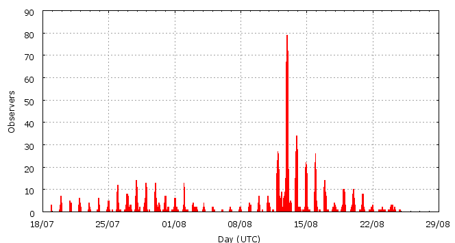

This page shows automated results of the Perseids 2009, based on visual observations by volunteers astronomers collected through the report form of the International Meteor Organization (IMO). The information on this page is generated fully automatically; for scientific use please refer to manual analyses published in scientific journals (such as WGN). Send your feedback regarding this page to Geert Barentsen.
Page contents:
 12-13 August in detail (NEW)
12-13 August in detail (NEW)Page generated: 2010 April 26 at 14:59 UTC.
ZHRmax = 173 based on 14273 reported Perseids, assuming population index r = 2.0.
ZHR (Zenithal Hourly Rate) is the number of meteors an observer would see under a dark sky with the radiant of the shower in zenith.

| Time (UTC) | Solarlon | nINT | nPER | ZHR | |
|---|---|---|---|---|---|
| 2009-07-19 23:30 | 117.277 | 25 | 50 | 5 | ±1 |
| 2009-07-21 17:33 | 118.951 | 31 | 78 | 7 | ±1 |
| 2009-07-23 20:54 | 120.994 | 23 | 60 | 6 | ±1 |
| 2009-07-25 14:10 | 122.637 | 32 | 82 | 7 | ±1 |
| 2009-07-26 06:18 | 123.279 | 35 | 81 | 6 | ±1 |
| 2009-07-26 23:47 | 123.976 | 22 | 80 | 6 | ±1 |
| 2009-07-27 15:10 | 124.588 | 30 | 81 | 8 | ±1 |
| 2009-07-27 23:19 | 124.913 | 32 | 82 | 7 | ±1 |
| 2009-07-28 06:41 | 125.206 | 27 | 82 | 8 | ±1 |
| 2009-07-28 22:22 | 125.831 | 37 | 87 | 9 | ±1 |
| 2009-07-29 00:33 | 125.918 | 27 | 89 | 9 | ±1 |
| 2009-07-29 19:32 | 126.674 | 34 | 82 | 9 | ±1 |
| 2009-07-29 23:59 | 126.851 | 27 | 87 | 9 | ±1 |
| 2009-07-30 10:02 | 127.252 | 30 | 80 | 6 | ±1 |
| 2009-07-31 00:41 | 127.836 | 37 | 80 | 7 | ±1 |
| 2009-07-31 20:57 | 128.643 | 20 | 84 | 11 | ±1 |
| 2009-08-01 07:01 | 129.044 | 17 | 80 | 11 | ±1 |
| 2009-08-02 00:17 | 129.732 | 19 | 86 | 12 | ±1 |
| 2009-08-02 21:13 | 130.567 | 34 | 80 | 12 | ±1 |
| 2009-08-03 12:32 | 131.177 | 17 | 83 | 11 | ±1 |
| 2009-08-04 18:58 | 132.391 | 19 | 66 | 15 | ±2 |
| 2009-08-07 12:40 | 135.012 | 12 | 65 | 21 | ±3 |
| 2009-08-09 00:28 | 136.442 | 16 | 83 | 21 | ±2 |
| 2009-08-09 22:11 | 137.309 | 13 | 80 | 29 | ±3 |
| 2009-08-10 14:43 | 137.970 | 16 | 81 | 21 | ±2 |
| 2009-08-11 00:56 | 138.378 | 12 | 83 | 30 | ±3 |
| 2009-08-11 19:48 | 139.133 | 23 | 80 | 18 | ±2 |
| 2009-08-11 22:26 | 139.238 | 70 | 252 | 31 | ±2 |
| 2009-08-12 00:16 | 139.311 | 101 | 381 | 36 | ±2 |
| 2009-08-12 02:08 | 139.386 | 61 | 237 | 43 | ±3 |
| 2009-08-12 05:33 | 139.522 | 19 | 81 | 38 | ±4 |
| 2009-08-12 08:06 | 139.624 | 54 | 294 | 105 | ±6 |
| 2009-08-12 10:01 | 139.701 | 9 | 94 | 54 | ±6 |
| 2009-08-12 14:13 | 139.869 | 12 | 84 | 145 | ±16 |
| 2009-08-12 16:14 | 139.949 | 19 | 178 | 150 | ±11 |
| 2009-08-12 18:07 | 140.025 | 22 | 257 | 147 | ±9 |
| 2009-08-12 20:19 | 140.113 | 174 | 1495 | 100 | ±3 |
| 2009-08-12 22:06 | 140.184 | 315 | 2754 | 89 | ±2 |
| 2009-08-12 23:53 | 140.255 | 231 | 1399 | 61 | ±2 |
| 2009-08-13 01:54 | 140.336 | 50 | 449 | 78 | ±4 |
| 2009-08-13 04:21 | 140.434 | 16 | 150 | 109 | ±9 |
| 2009-08-13 06:08 | 140.506 | 36 | 429 | 173 | ±8 |
| 2009-08-13 07:59 | 140.579 | 17 | 159 | 89 | ±7 |
| 2009-08-13 20:05 | 141.064 | 55 | 241 | 29 | ±2 |
| 2009-08-13 21:44 | 141.130 | 93 | 479 | 26 | ±1 |
| 2009-08-13 23:42 | 141.209 | 68 | 447 | 26 | ±1 |
| 2009-08-14 01:19 | 141.273 | 25 | 112 | 23 | ±2 |
| 2009-08-14 08:00 | 141.541 | 11 | 80 | 20 | ±2 |
| 2009-08-14 21:24 | 142.077 | 53 | 237 | 14 | ±1 |
| 2009-08-14 23:21 | 142.155 | 80 | 268 | 16 | ±1 |
| 2009-08-15 01:05 | 142.224 | 22 | 93 | 14 | ±1 |
| 2009-08-15 17:25 | 142.879 | 16 | 89 | 18 | ±2 |
| 2009-08-15 21:30 | 143.042 | 50 | 255 | 14 | ±1 |
| 2009-08-15 23:15 | 143.112 | 51 | 235 | 15 | ±1 |
| 2009-08-16 03:19 | 143.275 | 15 | 82 | 15 | ±2 |
| 2009-08-16 21:23 | 143.999 | 25 | 80 | 10 | ±1 |
| 2009-08-16 23:16 | 144.074 | 18 | 83 | 11 | ±1 |
| 2009-08-17 08:15 | 144.434 | 17 | 80 | 10 | ±1 |
| 2009-08-18 03:15 | 145.196 | 38 | 83 | 8 | ±1 |
| 2009-08-18 22:25 | 145.964 | 22 | 86 | 8 | ±1 |
| 2009-08-19 08:26 | 146.366 | 29 | 80 | 7 | ±1 |
| 2009-08-19 23:35 | 146.974 | 20 | 80 | 7 | ±1 |
| 2009-08-20 17:07 | 147.677 | 38 | 80 | 6 | ±1 |
| 2009-08-21 15:22 | 148.570 | 39 | 75 | 5 | ±1 |
| 2009-08-23 17:06 | 150.568 | 27 | 82 | 4 | ±0 |
| 2009-08-24 09:32 | 151.229 | 7 | 21 | 5 | ±1 |
Time is the middle of the interval in Universal Time (UTC), Solarlon is the position of the earth relative to the sun (equinox J2000.0), nINT is the number of reported observing periods and nPER is the reported number of Perseids.
ZHR = (1 + sum nPER) / sum(Teff/C) where Teff is the effective observing time and C is the total correction for limiting magnitude, clouds and zenith correction 1/sin(hR).

| Time (UTC) | Solarlon | nINT | nPER | ZHR | |
|---|---|---|---|---|---|
| 2009-08-12 00:08 | 139.306 | 10 | 40 | 36 | ±6 |
| 2009-08-12 00:20 | 139.314 | 11 | 39 | 43 | ±7 |
| 2009-08-12 00:35 | 139.324 | 12 | 39 | 35 | ±6 |
| 2009-08-12 00:49 | 139.333 | 10 | 45 | 35 | ±5 |
| 2009-08-12 01:04 | 139.343 | 12 | 41 | 41 | ±6 |
| 2009-08-12 01:22 | 139.355 | 10 | 40 | 41 | ±6 |
| 2009-08-12 01:34 | 139.363 | 9 | 37 | 43 | ±7 |
| 2009-08-12 01:47 | 139.372 | 10 | 44 | 44 | ±7 |
| 2009-08-12 02:05 | 139.384 | 13 | 45 | 51 | ±8 |
| 2009-08-12 02:27 | 139.398 | 14 | 39 | 31 | ±5 |
| 2009-08-12 02:50 | 139.414 | 10 | 41 | 62 | ±10 |
| 2009-08-12 04:07 | 139.465 | 8 | 34 | 32 | ±5 |
| 2009-08-12 05:50 | 139.534 | 5 | 36 | 57 | ±9 |
| 2009-08-12 06:47 | 139.572 | 10 | 40 | 52 | ±8 |
| 2009-08-12 07:33 | 139.603 | 7 | 38 | 117 | ±19 |
| 2009-08-12 07:47 | 139.612 | 8 | 35 | 103 | ±17 |
| 2009-08-12 08:06 | 139.624 | 6 | 36 | 149 | ±24 |
| 2009-08-12 08:15 | 139.630 | 7 | 37 | 160 | ±26 |
| 2009-08-12 08:24 | 139.637 | 7 | 38 | 114 | ±18 |
| 2009-08-12 08:40 | 139.647 | 7 | 39 | 69 | ±11 |
| 2009-08-12 09:10 | 139.667 | 5 | 38 | 44 | ±7 |
| 2009-08-12 09:59 | 139.699 | 4 | 45 | 56 | ±8 |
| 2009-08-12 12:03 | 139.782 | 6 | 35 | 87 | ±14 |
| 2009-08-12 14:25 | 139.877 | 9 | 75 | 148 | ±17 |
| 2009-08-12 15:32 | 139.922 | 5 | 65 | 161 | ±20 |
| 2009-08-12 16:01 | 139.941 | 3 | 41 | 163 | ±25 |
| 2009-08-12 16:24 | 139.957 | 7 | 39 | 134 | ±21 |
| 2009-08-12 16:58 | 139.979 | 5 | 76 | 156 | ±18 |
| 2009-08-12 17:25 | 139.997 | 6 | 36 | 166 | ±27 |
| 2009-08-12 18:00 | 140.020 | 4 | 35 | 104 | ±17 |
| 2009-08-12 18:19 | 140.033 | 2 | 54 | 197 | ±27 |
| 2009-08-12 18:23 | 140.036 | 2 | 42 | 142 | ±22 |
| 2009-08-12 18:48 | 140.052 | 7 | 47 | 143 | ±21 |
| 2009-08-12 19:14 | 140.070 | 9 | 39 | 61 | ±10 |
| 2009-08-12 19:31 | 140.081 | 9 | 51 | 107 | ±15 |
| 2009-08-12 19:41 | 140.088 | 15 | 121 | 111 | ±10 |
| 2009-08-12 19:52 | 140.095 | 12 | 91 | 108 | ±11 |
| 2009-08-12 20:02 | 140.102 | 9 | 54 | 87 | ±12 |
| 2009-08-12 20:12 | 140.108 | 22 | 205 | 109 | ±8 |
| 2009-08-12 20:22 | 140.115 | 15 | 103 | 74 | ±7 |
| 2009-08-12 20:31 | 140.121 | 14 | 172 | 117 | ±9 |
| 2009-08-12 20:41 | 140.127 | 28 | 322 | 118 | ±7 |
| 2009-08-12 20:52 | 140.135 | 27 | 228 | 89 | ±6 |
| 2009-08-12 21:02 | 140.141 | 20 | 171 | 113 | ±9 |
| 2009-08-12 21:12 | 140.149 | 35 | 404 | 92 | ±5 |
| 2009-08-12 21:21 | 140.154 | 21 | 169 | 83 | ±6 |
| 2009-08-12 21:31 | 140.161 | 21 | 195 | 93 | ±7 |
| 2009-08-12 21:41 | 140.168 | 23 | 198 | 81 | ±6 |
| 2009-08-12 21:51 | 140.174 | 21 | 182 | 90 | ±7 |
| 2009-08-12 22:01 | 140.181 | 24 | 216 | 87 | ±6 |
| 2009-08-12 22:10 | 140.187 | 28 | 236 | 96 | ±6 |
| 2009-08-12 22:22 | 140.195 | 23 | 196 | 89 | ±6 |
| 2009-08-12 22:30 | 140.200 | 26 | 218 | 91 | ±6 |
| 2009-08-12 22:41 | 140.207 | 36 | 262 | 79 | ±5 |
| 2009-08-12 22:52 | 140.215 | 27 | 214 | 94 | ±6 |
| 2009-08-12 23:00 | 140.220 | 26 | 213 | 89 | ±6 |
| 2009-08-12 23:10 | 140.227 | 38 | 191 | 67 | ±5 |
| 2009-08-12 23:21 | 140.234 | 27 | 187 | 70 | ±5 |
| 2009-08-12 23:30 | 140.240 | 26 | 151 | 70 | ±6 |
| 2009-08-12 23:40 | 140.247 | 20 | 141 | 63 | ±5 |
| 2009-08-12 23:53 | 140.255 | 20 | 160 | 65 | ±5 |
| 2009-08-13 00:05 | 140.263 | 23 | 110 | 51 | ±5 |
| 2009-08-13 00:11 | 140.268 | 9 | 56 | 63 | ±8 |
| 2009-08-13 00:23 | 140.275 | 23 | 146 | 53 | ±4 |
| 2009-08-13 00:36 | 140.284 | 15 | 65 | 51 | ±6 |
| 2009-08-13 00:46 | 140.291 | 11 | 87 | 55 | ±6 |
| 2009-08-13 00:54 | 140.296 | 16 | 87 | 58 | ±6 |
| 2009-08-13 01:08 | 140.305 | 6 | 35 | 63 | ±10 |
| 2009-08-13 01:16 | 140.311 | 4 | 36 | 69 | ±11 |
| 2009-08-13 01:24 | 140.316 | 6 | 50 | 63 | ±9 |
| 2009-08-13 01:39 | 140.326 | 6 | 59 | 73 | ±9 |
| 2009-08-13 01:51 | 140.334 | 6 | 46 | 69 | ±10 |
| 2009-08-13 02:00 | 140.340 | 4 | 55 | 138 | ±18 |
| 2009-08-13 02:10 | 140.347 | 6 | 61 | 81 | ±10 |
| 2009-08-13 02:25 | 140.357 | 6 | 47 | 83 | ±12 |
| 2009-08-13 02:41 | 140.367 | 4 | 37 | 104 | ±17 |
| 2009-08-13 03:00 | 140.380 | 4 | 39 | 84 | ±13 |
| 2009-08-13 03:50 | 140.414 | 5 | 45 | 88 | ±13 |
| 2009-08-13 04:28 | 140.439 | 4 | 42 | 154 | ±23 |
| 2009-08-13 04:48 | 140.452 | 4 | 36 | 115 | ±19 |
| 2009-08-13 05:11 | 140.468 | 5 | 46 | 147 | ±21 |
| 2009-08-13 05:25 | 140.477 | 5 | 41 | 133 | ±21 |
| 2009-08-13 05:51 | 140.494 | 4 | 58 | 191 | ±25 |
| 2009-08-13 06:10 | 140.507 | 3 | 57 | 195 | ±26 |
| 2009-08-13 06:30 | 140.520 | 4 | 58 | 224 | ±29 |
| 2009-08-13 06:40 | 140.527 | 5 | 49 | 143 | ±20 |
| 2009-08-13 06:56 | 140.537 | 4 | 40 | 147 | ±23 |
| 2009-08-13 07:17 | 140.552 | 4 | 37 | 100 | ±16 |
| 2009-08-13 07:34 | 140.563 | 4 | 44 | 132 | ±20 |
| 2009-08-13 07:59 | 140.580 | 4 | 43 | 90 | ±14 |
| 2009-08-13 08:31 | 140.601 | 5 | 38 | 65 | ±10 |
| 2009-08-13 08:53 | 140.615 | 1 | 7 | 66 | ±23 |
Time is the middle of the interval in Universal Time (UTC), Solarlon is the position of the earth relative to the sun (equinox J2000.0), nINT is the number of reported observing periods and nPER is the reported number of Perseids.
ZHR = (1 + sum nPER) / sum(Teff/C) where Teff is the effective observing time and C is the total correction for limiting magnitude, clouds and zenith correction 1/sin(hR).
Data has been received from 191 observers in 34 countries. Thank you for your efforts!
Note: click on the map for an interactive version.

| Observer | Country | Teff | nPER |
|---|---|---|---|
| Tomasz Adam | Poland | 10.83h | 93 |
| Moein Adnani | Iran | 3.00h | 107 |
| Salvador Aguirre | Mexico | 8.50h | 45 |
| Jean-marc Alcaino | France | 3.36h | 69 |
| Mina Alizadeh | Iran | 1.76h | 47 |
| Irene Bachelier | France | 2.84h | 33 |
| Pierre Bader | Germany | 28.10h | 128 |
| Ana Bankovic | Serbia | 5.33h | 155 |
| Geert Barentsen | Belgium | 0.95h | 19 |
| Rafael G. Barrios B. | Venezuela | 1.87h | 46 |
| Manca Behric | Slovenia | 13.99h | 109 |
| Zora Beljic | Serbia | 3.45h | 50 |
| Orlando Benitez Sanchez | Spain | 13.19h | 120 |
| Dinko Brautovi? | Croatia | 1.00h | 6 |
| Emil Brezina | Czech Republic | 0.72h | 3 |
| Vasko Cacanoski | Macedonia | 2.17h | 75 |
| Yi Cao | China | 1.42h | 3 |
| John Catania | Malta | 2.50h | 21 |
| Simiao Cheng | China | 5.43h | 163 |
| Sihao Cheng | China | 2.19h | 63 |
| Marcin Chwala | Poland | 35.93h | 328 |
| Matej Ciganj | Croatia | 2.15h | 31 |
| Filip Colakovic | Serbia | 3.83h | 10 |
| Tom Corstjens | Belgium | 2.00h | 14 |
| Tibor Csorgei | Slovakia | 1.99h | 34 |
| Tibor Csorgei | Slovakia | 0.66h | 5 |
| Lubos Danac | Slovakia | 0.28h | 0 |
| Nadka Dankova | Bulgaria | 0.45h | 8 |
| Dorosz Dariusz | Poland | 2.18h | 29 |
| Biljana Davidovic | Serbia | 4.00h | 62 |
| Arseniy Diachko | Ukraine | 11.05h | 46 |
| Sietse Dijkstra | Netherlands | 0.67h | 3 |
| Sietse Dijkstra | Netherlands | 16.40h | 97 |
| Todor Dimitrov | Bulgaria | 32.68h | 201 |
| Irena Divisova | Czech Republic | 1.50h | 29 |
| Bogdan Djuric | Serbia | 3.83h | 51 |
| Dariusz Dorosz | Poland | 2.83h | 98 |
| Audrius Dubietis | Lithuania | 15.65h | 163 |
| Jaroslaw Dygos | Poland | 12.00h | 131 |
| Garry Dymond | Canada | 1.75h | 28 |
| Claude Fournier | France | 3.22h | 35 |
| Christoph Gerber | Germany | 2.21h | 33 |
| Wei Ge | China | 1.00h | 51 |
| Maryam Ghased | Iran | 3.00h | 115 |
| William Godley | United States | 12.41h | 133 |
| Evgeny Gorbikov | Israel | 1.18h | 7 |
| Sylvie Gorkova | Czech Republic | 9.17h | 68 |
| Mitja Govedic | Slovenia | 27.93h | 271 |
| Daniel Gruen | Germany | 1.68h | 8 |
| Jesus Guerrero | Venezuela | 2.25h | 3 |
| Pavol Habuda | Slovakia | 2.58h | 9 |
| Cathy Hall | Canada | 3.24h | 47 |
| Shy Halatzi | Israel | 3.99h | 87 |
| Barbara Handzlik | Poland | 12.78h | 181 |
| Otto Hanyecz | Hungary | 2.04h | 13 |
| Roberto Haver | Italy | 3.34h | 14 |
| Roberto Haver | Italy | 1.32h | 4 |
| Vilem Heblik | Czech Republic | 31.94h | 142 |
| Robin Hegenbarth | unknown | 2.13h | 11 |
| Veerle Herrygers | Belgium | 1.17h | 7 |
| Ken Hodonsky | United States | 9.33h | 26 |
| Kamil Hornoch | Czech Republic | 2.51h | 21 |
| Lars Jacobs | Belgium | 2.78h | 23 |
| Goran Jakovac | Croatia | 1.75h | 9 |
| Michal Jakubec | Czech Republic | 4.70h | 43 |
| Visnja Jankov | Serbia | 7.17h | 137 |
| Wout Janssens | Belgium | 2.87h | 24 |
| Miroslav Jedlicka | Czech Republic | 0.94h | 6 |
| Le Ji | China | 1.00h | 6 |
| Carl Johannink | Netherlands | 28.09h | 180 |
| Javor Kac | Slovenia | 31.31h | 279 |
| Amirali Kandymov | Ukraine | 3.35h | 3 |
| Amiraly Kandymov | Ukraine | 4.02h | 16 |
| Gyula Kiss | Hungary | 3.75h | 47 |
| Zdenek Komarek | Slovakia | 4.97h | 14 |
| Andrija Kostic | Serbia | 14.21h | 193 |
| Roman Kostenko | Ukraine | 5.96h | 42 |
| Jakub Koukal | Czech Republic | 95.42h | 824 |
| Peter Kozich | unknown | 1.25h | 38 |
| Dovile Krauleidiene | Lithuania | 1.30h | 27 |
| Richard Kramer | United States | 1.63h | 5 |
| Maciej Kwinta | Poland | 16.75h | 92 |
| Delphine Lana-theatre | France | 2.43h | 44 |
| Katarina Lechmanova | Slovakia | 2.50h | 2 |
| Martin Lehotsky | Slovakia | 0.73h | 2 |
| Marko Leustek | Croatia | 3.05h | 27 |
| Peter Van Leuteren | Netherlands | 23.84h | 176 |
| Anna S. Levina | Israel | 15.37h | 213 |
| Xin Li | China | 1.50h | 63 |
| Tomasz Lojek | Poland | 20.88h | 233 |
| Jer Nan Lou | Taiwan | 2.88h | 27 |
| Olivier Lumia | France | 2.47h | 34 |
| Robert Lunsford | United States | 7.99h | 90 |
| Maciej Macidym | Poland | 1.90h | 37 |
| Jose Luis Maestre Garcia | Spain | 5.49h | 60 |
| Boris Majic | Serbia | 3.17h | 64 |
| Muriel Maksoudian | France | 3.19h | 55 |
| Veikko Makela | Finland | 2.18h | 57 |
| Milos Malat | Slovakia | 0.73h | 1 |
| Qiang Ma | China | 1.37h | 51 |
| Pierre Martin | Canada | 32.39h | 638 |
| Antonio Martinez | Venezuela | 6.28h | 20 |
| Mikhail Maslov | Russia | 25.97h | 55 |
| Batlomiej Matuszkiewicz | Poland | 10.25h | 189 |
| Bruce Mccurdy | Canada | 10.35h | 175 |
| Barbara Milovanovic | Serbia | 2.00h | 24 |
| Stasa Milojevic | Croatia | 2.00h | 31 |
| Marin Miocic | Croatia | 1.17h | 14 |
| Jakub Mirocha | Poland | 7.76h | 83 |
| Koen Miskotte | Netherlands | 42.78h | 678 |
| Sabine Wachter | Germany | 8.59h | 33 |
| Adam Musial | United Kingdom | 3.00h | 28 |
| Mohammad Nilforoushan | Iran | 2.00h | 55 |
| Filip Novoselnik | Croatia | 3.67h | 4 |
| Tereza Novotna | Czech Republic | 4.50h | 60 |
| Michal Palo | Slovakia | 2.50h | 3 |
| Anna Pavlova | Ukraine | 8.37h | 50 |
| Dusan Pavlovic | Serbia | 3.16h | 65 |
| Tamara Pavlovic | Yugoslavia | 4.00h | 56 |
| Antonia Penkova-jordanova | Bulgaria | 9.41h | 27 |
| Momchil Petrov | Bulgaria | 0.43h | 15 |
| Alan Pevec | Croatia | 3.15h | 5 |
| Krzysztof Pieszczoch | Poland | 2.80h | 86 |
| Ivica Pletikosa | Croatia | 8.00h | 26 |
| Krzysztof Polakowski | Poland | 9.48h | 208 |
| Robert Pomohaci | Romania | 0.78h | 2 |
| Djordje Rakic | Serbia | 1.33h | 16 |
| Ella Ratz | Israel | 2.50h | 18 |
| Aleksandar Reljic | Serbia | 2.00h | 37 |
| Jurgen Rendtel | Germany | 32.57h | 213 |
| Agnieszka Ruminska | Poland | 3.29h | 94 |
| Gilbert Sanchez | Venezuela | 1.38h | 55 |
| Lukasz Sanocki | Poland | 2.36h | 72 |
| Branislav Savic | Serbia | 2.90h | 17 |
| Branislav Savic | Serbia | 8.12h | 202 |
| Teodora Savic Popovic | Serbia | 3.44h | 94 |
| Alex Scholten | unknown | 1.75h | 45 |
| Ivan M. Sergey | Belarus | 0.75h | 2 |
| Guy Sheffer | Israel | 1.73h | 24 |
| Magdalena Sieniawska | Poland | 23.4h | 292 |
| Costantino Sigismondi | Italy | 1.66h | 5 |
| Andrzej Skoczewski | Poland | 9.67h | 136 |
| Vesna Slavkovic | Yugoslavia | 18.17h | 161 |
| Stanislav Sokol | Slovakia | 0.73h | 0 |
| Paulina Sowicka | Poland | 10.72h | 194 |
| Ulrich Sperberg | Germany | 1.48h | 25 |
| Luka Spiric | Croatia | 1.63h | 28 |
| Jiri Srba | Czech Republic | 0.84h | 23 |
| Michal Stefancik | Slovakia | 4.97h | 9 |
| Marek St?czek | Poland | 1.00h | 33 |
| Kristian Stojsic | Croatia | 4.75h | 26 |
| Milena Stojic | Yugoslavia | 4.85h | 13 |
| Martin Stojanovski | Macedonia | 2.17h | 74 |
| Nikola Stojanovic | Serbia | 8.86h | 42 |
| Nikola Stojanovic | Croatia | 3.67h | 17 |
| Olivera Stojanovic | Croatia | 11.86h | 150 |
| Wesley Stone | United States | 5.23h | 203 |
| Martina Supak | Croatia | 4.25h | 30 |
| Matej Sustr | Slovakia | 0.73h | 5 |
| Michal Sustr | Slovakia | 0.73h | 5 |
| Jiri Svoboda | Czech Republic | 1.93h | 5 |
| Pavel Svozil | Czech Republic | 0.73h | 7 |
| Dana Camelia Talpeanu | Romania | 1.63h | 3 |
| Uros Tanaskovic | Serbia | 1.58h | 19 |
| Michel Vandeputte | Belgium | 84.58h | 908 |
| Masayuki Toda | Japan | 11.86h | 273 |
| Marija Todorovic | Serbia | 1.17h | 16 |
| Simeon Todorov | Bulgaria | 0.57h | 8 |
| Veljko Tomic | Bulgaria | 2.15h | 45 |
| Jhonny Torres | Venezuela | 1.85h | 27 |
| Daniela Urumova | Bulgaria | 8.16h | 38 |
| Hendrik Vandenbruaene | Belgium | 1.17h | 17 |
| Valentin Velkov | Bulgaria | 2.00h | 53 |
| Vilena Velikic | Serbia | 4.25h | 88 |
| Jan Verfl | Czech Republic | 2.06h | 6 |
| Miroslav Vetrik | Slovakia | 0.80h | 1 |
| Denis Vida | Croatia | 8.90h | 30 |
| Myriam Vingerhoets | Belgium | 15.79h | 91 |
| Frank Wachter | Germany | 2.05h | 6 |
| Andreas Waets | Belgium | 1.47h | 27 |
| Ewa Wala | Poland | 16.12h | 163 |
| Krzysztof Walczak | Poland | 5.63h | 89 |
| William Watson | United States | 17.40h | 244 |
| Thomas Weiland | Austria | 35.93h | 105 |
| Xiaofan Wei | China | 2.00h | 53 |
| Mariusz Wisniewski | Poland | 20.34h | 338 |
| Lukasz Wozniak | Poland | 4.33h | 213 |
| Xijun Wu Wu | China | 1.00h | 31 |
| Yingkai Xia | China | 1.00h | 43 |
| Li Xue | China | 5.90h | 225 |
| Quanzhi Ye | China | 0.49h | 3 |
| Ilkka Yrjola | Finland | 1.00h | 5 |
| Weizhou Zeng | China | 5.71h | 138 |
| Xiang Zhan | China | 1.00h | 17 |
| Yu Zhang | China | 2.00h | 48 |
| Jurga Zieniute | Lithuania | 2.50h | 25 |
| Przemyslaw Zoladek | Poland | 4.00h | 31 |
| Dario Zubovic | Croatia | 2.00h | 9 |
Create your own analysis!
Rate intervals: per2009_rate.csv (CSV-format).
Magnitude distributions: per2009_magn.csv (CSV-format).
The information on this page may be distributed freely provided credit is given to the International Meteor Organization (IMO) and, when possible, to the individual observers.
The computer facilities to generate this page are provided by the Urania Public Observatory in Belgium.